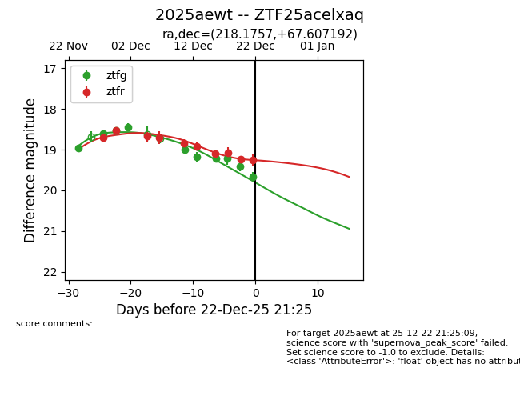
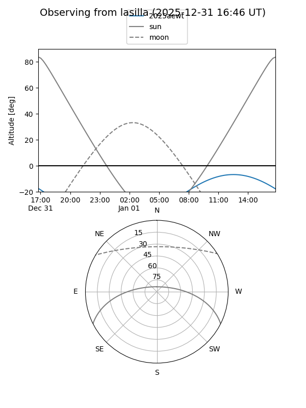
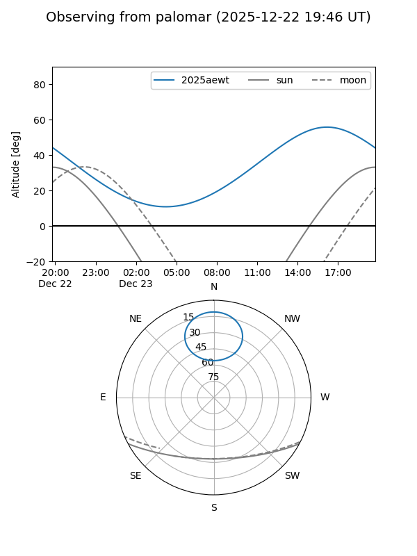
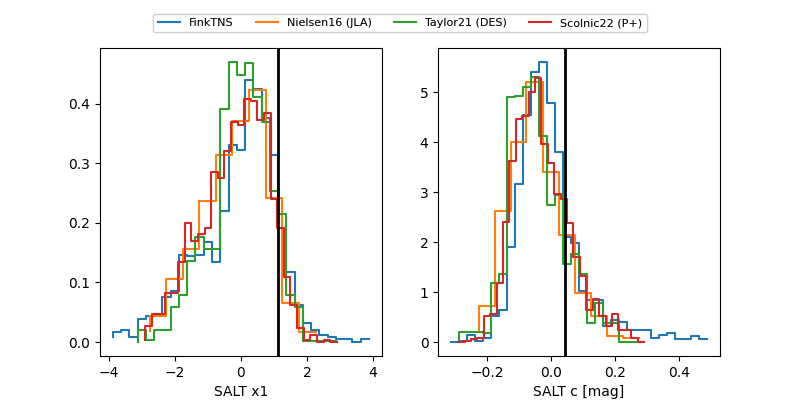

2025aewt
Target 2025aewt at 2025-12-20 14:24
Aliases and brokers:
FINK: fink-portal.org/ZTF25acelxaq
Lasair: lasair-ztf.lsst.ac.uk/objects/ZTF25acelxaq
ALeRCE: alerce.online/object/ZTF25acelxaq
TNS: wis-tns.org/object/2025aewt
YSE: ziggy.ucolick.org/yse/transient_detail/2025aewt
alt names
ZTF25acelxaq (ztf,fink_ztf)
2025aewt (tns,yse)
Coordinates:
equatorial (ra, dec) = 218.1757,+67.60719
equatorial (HMS+DMS) = 14:32:42.17,+67:36:25.89
galactic (l, b) = (109.1845,+46.72595)
Flags:
Photometry:
last ztfg=19.42, ztfr=19.07
9 ztfg, 8 ztfr detections
Lightcurve

Visibility


Additional plots
